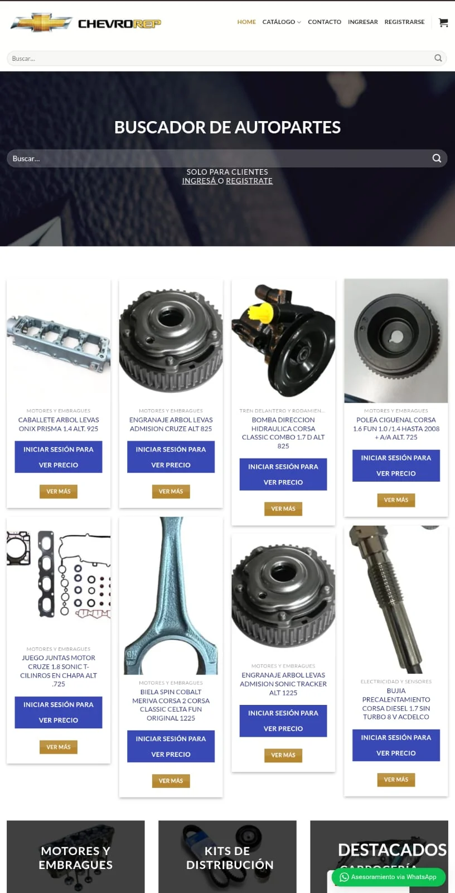
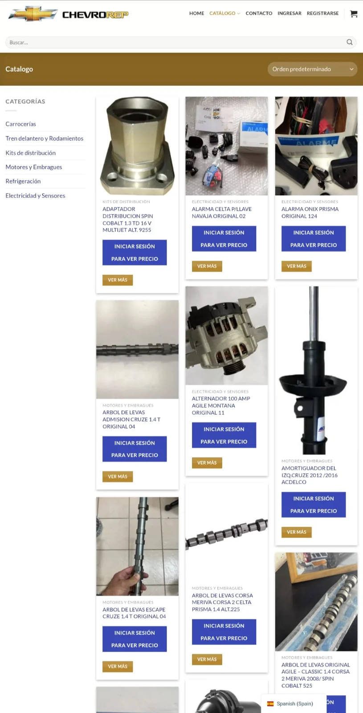
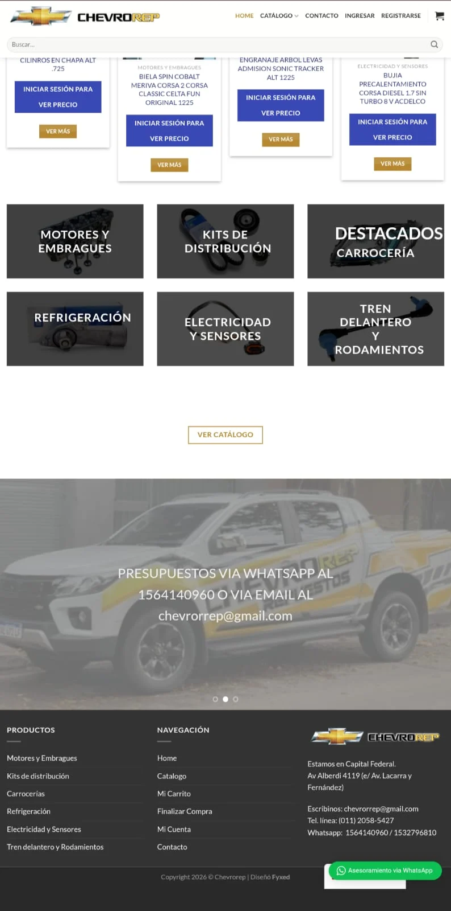

Automatización e IA · Buenos Aires
Automatización con IA y sistemas a medida
Cada consulta sin responder, cada turno olvidado y cada cobro que se atrasa es plata que se va en silencio. Construimos los sistemas que hacen ese trabajo por vos — todos los días, sin fallar y sin sueldo.
Ojito no parpadea
para que vos puedas dormir
Autodiagnóstico
Señales de que tu negocio ya necesita esto
Leé la lista sin apuro. No hace falta que te pasen todas.
Ojito con el turno de las 15: nunca confirmó.
¿Te pasan tres o más?
No es falta de esfuerzo. Es falta de sistema.
Calculadora
¿Cuánto te está costando seguir igual?
Tres datos tuyos y te mostramos el número. No pedimos email ni nada a cambio.
Vi todo. Tres cuotas vencidas y una puerta abierta.
Estás dejando de facturar aproximadamente
$4.680.000
por año
Son 6 oportunidades por semana que se pierden. Un sistema de recordatorios y seguimiento automático recupera buena parte de eso.
Quiero recuperarloLa cuenta es simple y transparente: pérdidas semanales × ticket × 52 semanas. Es una estimación con tus propios números, no una promesa de resultado.
Qué hacemos
Cinco frentes donde se te escapa la plata
Debajo de cada servicio está lo que ganás si lo tenés y lo que perdés si lo seguís postergando. No hace falta empezar por todo: se arranca por el que más te duele hoy.
Frente 1
Captar más clientes
Si dependés de que alguien conteste a tiempo, estás perdiendo ventas todos los días sin enterarte.
Ver los 4 servicios
Cerrar
Frente 1
Captar más clientes
Si dependés de que alguien conteste a tiempo, estás perdiendo ventas todos los días sin enterarte.
Chatbots Inteligentes
Agentes conversacionales para ventas, soporte y seguimiento, adaptados al lenguaje y al ritmo de tu negocio.
Turnos y Reservas Online
Tus clientes reservan solos, las 24 horas, sin depender de que alguien atienda el teléfono o el WhatsApp.
Embudos y Seguimiento Comercial
Automatizamos el contacto inicial, los recordatorios, el recupero de consultas frías y el seguimiento de cada oportunidad.
Reseñas y Reputación en Google Maps
Pedido automático de reseñas por WhatsApp, QR o tarjeta NFC después de cada compra o turno. Diseñamos la tarjeta o el cartel NFC: el cliente lo apoya con el celular y cae directo en la pantalla para dejar su calificación y su opinión en Google, sin buscar nada.
Frente 2
Ordenar la operación
Si la información vive en cuadernos, planillas sueltas y la cabeza de una sola persona, el negocio no escala.
Ver los 5 servicios
Cerrar
Frente 2
Ordenar la operación
Si la información vive en cuadernos, planillas sueltas y la cabeza de una sola persona, el negocio no escala.
Software de Gestión a Medida
Centralizamos turnos, inventario, cobros y operación diaria en una herramienta clara, rápida y hecha a la medida de tu negocio.
Automatización de Procesos
Conectamos formularios, WhatsApp, correo, CRM y tareas internas para que tu equipo deje de hacer trabajo repetitivo.
Admin para Gimnasios y Centros Fitness
Control de socios, planes, horarios y disciplinas desde un solo panel, con estado de cuenta y vencimientos en tiempo real.
Accesos por QR
Control de ingreso a gimnasios, oficinas, eventos o edificios con un código QR único por persona, sin llaves, tarjetas ni personal fijo en la puerta.
Paneles e Indicadores
Convertimos datos operativos en tableros simples para tomar decisiones más rápidas y con mejor visibilidad.
Frente 3
Cobrar mejor
La plata que no entra a tiempo es la que más caro sale: financiás vos lo que ya deberías tener cobrado.
Ver los 3 servicios
Cerrar
Frente 3
Cobrar mejor
La plata que no entra a tiempo es la que más caro sale: financiás vos lo que ya deberías tener cobrado.
Cobros y Recordatorios Automáticos
Aviso automático antes del vencimiento y cobro directo por link de pago, sin perseguir a nadie por teléfono.
Facturación Electrónica AFIP
Emisión de facturas A, B y C con CAE real de AFIP, integrada al mismo sistema donde ya cargás las ventas.
Fidelización Digital con QR
Tarjeta de puntos y beneficios sin apps ni plástico: el cliente acumula y canjea escaneando un QR.
Frente 4
Imagen y presencia digital
Si no te encuentran, o te encuentran y no te toman en serio, todo lo demás importa poco.
Ver los 4 servicios
Cerrar
Frente 4
Imagen y presencia digital
Si no te encuentran, o te encuentran y no te toman en serio, todo lo demás importa poco.
Sitios Web desde Cero
Desarrollamos tu web completa, a medida y pensada para convertir visitas en clientes — sin plantillas genéricas.
Renovación de Webs Abandonadas
Actualizamos sitios viejos, lentos o desactualizados —diseño, velocidad, seguridad y contenido— sin perder lo que ya funciona.
Creación de Marcas desde Cero
Diseñamos tu marca completa —logo, paleta de colores, tipografías y piezas gráficas— para que tengas una identidad profesional desde el primer día.
Frente 5
Proteger lo que ya tenés
De nada sirve automatizar y vender más si un descuido deja tus datos, los de tus clientes o tus cuentas al alcance de cualquiera.
Ver los 2 servicios
Cerrar
Frente 5
Proteger lo que ya tenés
De nada sirve automatizar y vender más si un descuido deja tus datos, los de tus clientes o tus cuentas al alcance de cualquiera.
Pentesting para Empresas
Buscamos las fallas de tu sistema, tu web o tu red antes de que las encuentre otro. Se hace siempre con tu autorización por escrito y sobre lo que vos definas, y termina en un informe con cada hallazgo, su gravedad y cómo corregirlo.
Revisión de Seguridad para Particulares
Revisamos tus cuentas, tu celular y tus dispositivos: si tus datos aparecieron en alguna filtración conocida, qué contraseñas conviene cambiar y qué tenés expuesto sin saberlo. Sobre tus propias cuentas y con tu autorización.
Portfolio
Lo que construimos
Sistemas propios y de clientes, todos en producción. Las capturas son reales.
SaaS
Stratos Admin
Plataforma SaaS completa para centros fitness y gimnasios. Socios, planes por disciplina, reservas con check-in QR, facturación electrónica AFIP y analytics en tiempo real. Multi-gym, multi-idioma.
Ver el proyecto
Cerrar
SaaS
Stratos Admin
Plataforma SaaS completa para centros fitness y gimnasios. Socios, planes por disciplina, reservas con check-in QR, facturación electrónica AFIP y analytics en tiempo real. Multi-gym, multi-idioma.


App Móvil
Stratos Mobile
App nativa para socios del gimnasio. Panel con plan activo y créditos en tiempo real, reserva de clases, check-in QR, rutinas de entrenamiento, calculadores de nutrición y cronómetro de entrenamiento con historial.
Ver el proyecto
Cerrar
App Móvil
Stratos Mobile
App nativa para socios del gimnasio. Panel con plan activo y créditos en tiempo real, reserva de clases, check-in QR, rutinas de entrenamiento, calculadores de nutrición y cronómetro de entrenamiento con historial.


Web App
Mini Turnos App
Plataforma de gestión de turnos online totalmente personalizable por rubro. Cada negocio adapta colores, texto y estilo. Los clientes reservan ingresando el código del negocio — sin crear cuenta.
Ver el proyecto
Cerrar
Web App
Mini Turnos App
Plataforma de gestión de turnos online totalmente personalizable por rubro. Cada negocio adapta colores, texto y estilo. Los clientes reservan ingresando el código del negocio — sin crear cuenta.


App de Escritorio
FactuApp
Sistema de gestión administrativa y facturación electrónica para escritorio. Emite facturas tipo A, B y C con integración real a AFIP vía WSFEv1, obtiene CAE automáticamente y cubre todo el ciclo comercial: presupuestos, remitos, cuenta corriente, cheques, notas de crédito/débito, gastos e impuestos.
Ver el proyecto
Cerrar
App de Escritorio
FactuApp
Sistema de gestión administrativa y facturación electrónica para escritorio. Emite facturas tipo A, B y C con integración real a AFIP vía WSFEv1, obtiene CAE automáticamente y cubre todo el ciclo comercial: presupuestos, remitos, cuenta corriente, cheques, notas de crédito/débito, gastos e impuestos.


Sitio Web
Marroquinería Victoria
Landing y catálogo de trabajos para una marca argentina de marroquinería a medida (empresas, pymes y particulares). Diseño glassmorphism a medida, catálogo por WhatsApp sin carrito ni precios públicos, y una capa completa de SEO/GEO para posicionamiento y recomendaciones de IA.
Ver el proyecto
Cerrar
Sitio Web
Marroquinería Victoria
Landing y catálogo de trabajos para una marca argentina de marroquinería a medida (empresas, pymes y particulares). Diseño glassmorphism a medida, catálogo por WhatsApp sin carrito ni precios públicos, y una capa completa de SEO/GEO para posicionamiento y recomendaciones de IA.


eCommerce B2B
ChevroRep
Tienda mayorista de repuestos Chevrolet. El catálogo es público pero los precios no: para verlos hay que registrarse y esperar la aprobación manual de la cuenta, que es como trabaja el negocio de verdad. Más de 570 productos en seis rubros, con buscador de autopartes, carrito y checkout. Desarrollo completo y administración continua.
Ver el proyecto
Cerrar
eCommerce B2B
ChevroRep
Tienda mayorista de repuestos Chevrolet. El catálogo es público pero los precios no: para verlos hay que registrarse y esperar la aprobación manual de la cuenta, que es como trabaja el negocio de verdad. Más de 570 productos en seis rubros, con buscador de autopartes, carrito y checkout. Desarrollo completo y administración continua.



Automatización
Chat Bot Multi Rubro
Asistente de WhatsApp que atiende, agenda y hace seguimiento solo, las 24 horas. Entiende lo que le escriben en lenguaje natural —sin menús de números— y trabaja sobre la disponibilidad real del negocio. La base es la misma para estética, salud, fitness, gastronomía o comercio: cambian los servicios, los horarios y el tono, no el sistema.
Ver el proyecto
Cerrar
Automatización
Chat Bot Multi Rubro
Asistente de WhatsApp que atiende, agenda y hace seguimiento solo, las 24 horas. Entiende lo que le escriben en lenguaje natural —sin menús de números— y trabaja sobre la disponibilidad real del negocio. La base es la misma para estética, salud, fitness, gastronomía o comercio: cambian los servicios, los horarios y el tono, no el sistema.


Encontrá tu caso
Industrias que transformamos
Cada rubro pierde por un lado distinto. Tocá el tuyo y te llevamos directo a la solución.
Programa sin fines de lucro · 2 cupos por año
zyntra causas
Desarrollo gratis para ONGs y fundaciones.
La misma tecnología que le ahorra horas a un negocio le puede cambiar el día a una fundación que hoy trabaja con un cuaderno y un grupo de WhatsApp. Si tu proyecto ayuda a personas, animales o al ambiente y no persigue ganancia, el desarrollo lo ponemos nosotros.
Ambiente
Puntos verdes con QR, mapas de reciclaje, campañas de reforestación y denuncias de contaminación que hoy viven en una planilla que nadie lee. Apps de sustentabilidad y cuidado del medio ambiente.
Refugios y rescate animal
Software para refugios y proteccionistas: adopciones con ficha completa, historial médico, seguimiento post-adopción y campañas de castración, todo en un solo lado.
Comedores y bancos de alimentos
Sistema de stock y donaciones para comedores, merenderos y bancos de alimentos: qué entró, qué salió y qué falta, con una rendición que se puede mostrar y que consigue más donantes que cualquier discurso.
Clubes de barrio y deporte social
Gestión de socios, cuotas, actividades y asistencia para clubes, centros culturales y sociedades de fomento. Es lo que ya construimos para gimnasios, adaptado a quien no factura.
Seguridad para organizaciones
Auditoría de seguridad y protección de datos personales sin cargo. Una ONG que guarda datos de menores o de víctimas y no tiene presupuesto de seguridad es el caso donde una auditoría vale más.
Tu causa
Salud, discapacidad y accesibilidad, educación, adultos mayores, bomberos voluntarios, cooperativas, voluntariado, derechos humanos. Si no está en la lista igual queremos escucharlo.
El desarrollo va a costo cero
Diseño, programación, base de datos, integraciones, puesta en línea y las correcciones de los primeros meses. Toda la parte técnica es nuestro aporte y no se factura.
Los proveedores externos los paga el proyecto
Dominio, hosting, la API de WhatsApp o una pasarela de cobro se contratan a nombre de la organización y quedan a su cargo. Nosotros no revendemos ni ponemos comisión: te decimos cuál es la opción más barata y la contratás vos.
Dos proyectos por año
Preferimos hacer dos bien que diez a medias. El que entra recibe el mismo trabajo, los mismos plazos y la misma atención que un cliente que paga.
Pedimos una sola cosa a cambio: poder firmar el trabajo y mostrarlo en nuestro portfolio. Cuando la causa es sensible —violencia de género, infancia, salud mental— va sin firma, sin capturas y sin mención. Eso no se negocia.
Preguntas
Lo que casi todos nos preguntan
Si la tuya no está, escribinos: la respondemos igual.
¿Esto no es carísimo?
Depende de con qué lo compares. Casi siempre el costo del sistema es menor que el de las horas que hoy se van en tareas manuales, o que el de las ventas que se pierden por no responder a tiempo. Te pasamos el número cerrado antes de arrancar: no trabajamos con presupuestos abiertos ni con sorpresas a mitad de camino. Y si el proyecto no cierra por números, te lo decimos de entrada.
¿Sirve para un negocio chico?
Es justamente donde más se nota. En un negocio chico no hay un equipo administrativo que absorba el desorden: lo absorbe el dueño, con sus horas. Podés empezar por una sola cosa —los turnos, los cobros, la web— y sumar el resto cuando tenga sentido. No hace falta cambiar todo de golpe.
¿Cuánto tarda en estar funcionando?
Varía según el alcance: una web o un menú digital es cuestión de días; un sistema de gestión completo lleva semanas. Lo que sí hacemos siempre es entregar por partes, para que veas algo funcionando temprano y no esperes meses a ciegas. En el diagnóstico gratuito te damos el plazo estimado de tu caso puntual.
¿Y si no entiendo nada de tecnología?
Mejor: ese es exactamente nuestro trabajo. No necesitás saber nada técnico para trabajar con nosotros. Te explicamos cada decisión en castellano, sin jerga, y te dejamos el sistema andando y explicado. Si algo requiere que alguien de tu equipo lo use todos los días, lo capacitamos.
¿La IA va a reemplazar a mi equipo?
No es lo que buscamos ni lo que vemos en la práctica. Lo que reemplaza la automatización es el trabajo repetitivo: copiar datos, mandar el mismo recordatorio cien veces, revisar planillas. Eso libera a tu gente para lo que una máquina no hace, que es atender bien y decidir. La tecnología ordena; el criterio sigue siendo tuyo.
¿Quedo atado a ustedes para siempre?
No. El sistema es tuyo, y te lo entregamos documentado. Ofrecemos soporte y mejoras continuas porque a la mayoría le conviene, pero es una decisión tuya, no una condición para que las cosas sigan funcionando.
Sin costo y sin compromiso
Diagnóstico gratuito, 20 minutos
Te decimos qué automatizar primero, cuánto tiempo te devuelve y qué costaría. El informe te queda aunque no trabajes con nosotros.
- No es una llamada de venta
- Respondemos en 24-48 hs
- Te queda el informe
Conectemos
Telegram es nuestro canal para proyectos fuera de catálogo. Para todo lo demás, WhatsApp.
Sobre nosotros
Compromiso, conocimiento y seriedad en cada implementación
En Zyntra trabajamos con una idea simple: la tecnología tiene que resolver problemas reales. Por eso analizamos cada caso, proponemos soluciones concretas y construimos sistemas que puedan sostenerse en el tiempo.
Compromiso
Acompañamos cada proyecto con seguimiento real, comunicación clara y foco en resultados.
Conocimiento
Diseñamos soluciones pensadas para procesos, atención, ventas y operación interna.
Seriedad
Priorizamos implementaciones sólidas, medibles y alineadas con la realidad del negocio.